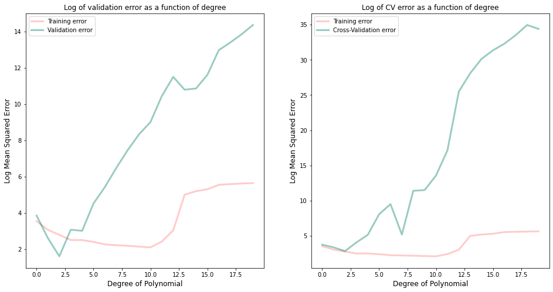
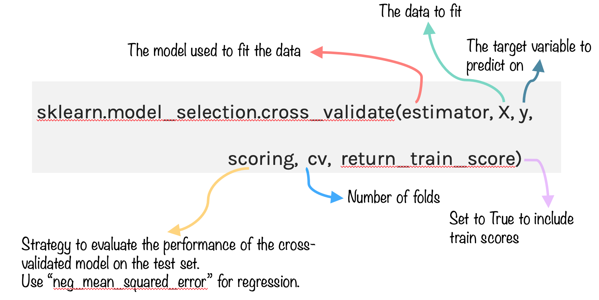

Key Word(s): Cross Validation, Train Validation Test, K-Fold, Leave-One-Out, Underfitting, Overfitting, MSE
Title :¶
Exercise: Best Degree of Polynomial using Cross-validation
Description :¶
The aim of this exercise is to find the best degree of polynomial based on the MSE values. Further, plot the train and cross-validation error graphs as shown below.

Data Description:¶
Instructions:¶
- Read the dataset and split into train and validation sets.
- Select a max degree value for the polynomial model.
- For each degree:
- Perform k-fold cross validation
- Fit a polynomial regression model for each degree on the training data and predict on the validation data
- Compute the train, validation and cross-validation error as MSE values and store them in separate lists.
- Print the best degree of the model for both validation and cross-validation approaches.
- Plot the train and cross-validation errors for each degree.
Hints:¶
pd.read_csv(filename)</a> Returns a pandas dataframe containing the data and labels from the file data.
sklearn.train_test_split() Splits the data into random train and test subsets.
sklearn.PolynomialFeatures() Generates a new feature matrix consisting of all polynomial combinations of the features with degree less than or equal to the specified degree.
sklearn.cross_validate() Evaluate metric(s) by cross-validation and also record fit/score times.

sklearn.fit_transform() Fits transformer to X and y with optional parameters fit_params and returns a transformed version of X.
sklearn.LinearRegression(fit_intercept=False) LinearRegression fits a linear model.
sklearn.fit() Fits the linear model to the training data.
sklearn.predict() Predict using the linear model.
plt.subplots() Create a figure and a set of subplots.
operator.itemgetter() Return a callable object that fetches item from its operand.
zip() Makes an iterator that aggregates elements from each of the iterables.
Note: This exercise is auto-graded and you can try multiple attempts.
# Import necessary libraries
%matplotlib inline
import operator
import numpy as np
import pandas as pd
import matplotlib.pyplot as plt
from sklearn.metrics import mean_squared_error
from sklearn.linear_model import LinearRegression
from sklearn.model_selection import cross_validate
from sklearn.model_selection import train_test_split
from sklearn.preprocessing import PolynomialFeatures
Reading the dataset¶
# Read the file "dataset.csv" as a Pandas dataframe
df = pd.read_csv("dataset.csv")
# Assign the values of column x as the predictor
x = df[['x']].values
# Assign the values of column y as the response variable
y = df.y.values
Train-validation split¶
### edTest(test_random) ###
# Split the data into train and validation sets with 75% for training
# and with a random_state=1
x_train, x_val, y_train, y_val = train_test_split(___)
Computing the MSE¶
### edTest(test_regression) ###
# To iterate over the range, select the maximum degree of the polynomial
maxdeg = 10
# Create three empty lists to store training, validation and cross-validation MSEs
training_error, validation_error, cross_validation_error = [],[],[]
# Loop through the degrees of the polynomial
for d in range(___):
# Compute the polynomial features for the entire data
x_poly = PolynomialFeatures(___).fit_transform(___)
# Compute the polynomial features for the train data
x_poly_train = PolynomialFeatures(___).fit_transform(___)
# Compute the polynomial features for the validation data
x_poly_val = PolynomialFeatures(___).fit_transform(___)
# Initialize a Linear Regression object
lreg = LinearRegression()
# Fit model on the training set
lreg.fit(___)
# Predict on the training data
y_train_pred = lreg.predict(___)
# Predict on the validation set
y_val_pred = lreg.predict(___)
# Compute the mse on the train data
training_error.append(mean_squared_error(___))
# Compute the mse on the validation data
validation_error.append(mean_squared_error(___))
# Perform cross-validation on the entire data with 10 folds and
# get the mse_scores
mse_score = cross_validate(___)
# Compute the mean of the cross validation error and store in list
# Remember to take into account the sign of the MSE metric returned by the cross_validate function
cross_validation_error.append(___)
Finding the best degree¶
### edTest(test_best_degree) ###
# Get the best degree associated with the lowest validation error
min_mse = min(___)
best_degree = validation_error.index(___)
# Get the best degree associated with the lowest cross-validation error
min_cross_val_mse = min(___)
best_cross_val_degree = cross_validation_error.index(___)
# Print the values
print("The best degree of the model using validation is",best_degree)
print("The best degree of the model using cross-validation is",best_cross_val_degree)
Plotting the error graph¶
# Plot the errors as a function of increasing d value to visualise the training and validation errors
fig, ax = plt.subplots(1,2, figsize=(16,8))
# Plot the training error with labels
ax[0].plot(range(maxdeg), np.log(training_error), label = 'Training error', linewidth=3, color='#FF7E79', alpha=0.4)
# Plot the validation error with labels
ax[0].plot(range(maxdeg), np.log(validation_error), label = 'Validation error', linewidth=3, color="#007D66", alpha=0.4)
# Plot the training error with labels
ax[1].plot(range(maxdeg), np.log(training_error), label = 'Training error', linewidth=3, color='#FF7E79', alpha=0.4)
# Plot the cross-validation error with labels
ax[1].plot(range(maxdeg), np.log(cross_validation_error), label = 'Cross-Validation error', linewidth=3, color="#007D66", alpha=0.4)
# Set the plot labels and legends
ax[0].set_xlabel('Degree of Polynomial', fontsize=12)
ax[0].set_ylabel('Log Mean Squared Error', fontsize=12)
ax[0].set_title("Log of validation error as a function of degree")
ax[1].set_xlabel('Degree of Polynomial', fontsize=12)
ax[1].set_ylabel('Log Mean Squared Error', fontsize=12)
ax[1].set_title("Log of CV error as a function of degree")
ax[0].legend()
ax[1].legend()
plt.show();
⏸ If you run the exercise with a random state of 0, do you notice any change? What conclusion can you draw from this experiment?
### edTest(test_chow1) ###
# Submit an answer choice as a string below
answer1 = '___'